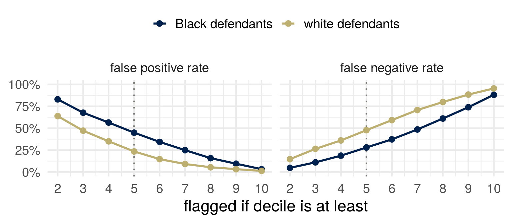

| n | re-arrested within 2 years | flagged | FPR | FNR | PPV | |
|---|---|---|---|---|---|---|
| Black defendants | 3,696 | 51% | 59% | 45% | 28% | 63% |
| white defendants | 2,454 | 39% | 35% | 23% | 48% | 59% |
Fairness I: observational
Joshua Loftus
Week 7
Part 1: The COMPAS dispute
Part 2: Rates
Part 3: Three criteria
Part 4: The identity
Part 5: Which fairness
What you brought
For the rule you brought: who pays when it wrongly says yes? Who pays when it wrongly says no? Are they the same people?
Part 1: The COMPAS dispute
COMPAS
COMPAS: a risk score from 137 questions, sold by Northpointe; a decile from 1 to 10. Broward County, Florida, used it in pretrial decisions. ProPublica (May 2016): the scores of more than 7,000 people assessed in 2013 and 2014, and whether each was arrested again within two years.
Convention: \(Y = 1\) is a new arrest within two years; \(\hat Y = 1\) is decile 5 or above, the county’s “medium” and “high”; \(A\) is race as recorded, Black or white.
\(1\) is the bad outcome and the flag. The book’s examples run the other way.
Angwin, Larson, Mattu and Kirchner (2016), “Machine Bias,” ProPublica, 23 May 2016, https://www.propublica.org/article/machine-bias-risk-assessments-in-criminal-sentencing; Larson, Mattu, Kirchner and Angwin (2016), “How We Analyzed the COMPAS Recidivism Algorithm,” ProPublica, 23 May 2016, https://www.propublica.org/article/how-we-analyzed-the-compas-recidivism-algorithm.
Four numbers
ProPublica: of those not re-arrested, 45% of Black defendants had been flagged, against 23% of white defendants. Of those re-arrested, 48% of white defendants had not been flagged, against 28%.
The replies: of those flagged, the share re-arrested was about the same, 63% and 59%; and the same decile meant the same re-arrest rate in both groups.
Counts: ProPublica’s compas-scores-two-years.csv (github.com/propublica/compas-analysis), 6,150 people recorded as African-American or Caucasian. The replies as summarized in Chouldechova (2017), “Fair Prediction with Disparate Impact,” Big Data 5(2), 153–163, doi:10.1089/big.2016.0047, section 1.
Which number should be equal?
If the score has to treat Black and white defendants the same in one respect, which number would you want to be equal:
- as a defendant who will not reoffend;
- as the judge reading the flag;
- as a member of the public?
One sentence each. Say why.
What is being predicted?
\(Y = 1\) means a new arrest in Broward County’s records within two years.
What we want to know about is reoffending, \(Y^*\). Nobody observes it.
Name one way the gap between being arrested and reoffending could differ between the two groups. Which of the four numbers does it move, and which way?
Every rate that follows, the two groups’ base rates included, is a rate of the proxy.
Part 2: Rates
Four rates
| \(\hat Y = 1\) (flagged) | \(\hat Y = 0\) (not flagged) | |
|---|---|---|
| \(Y = 1\) (re-arrested) | true positive | false negative |
| \(Y = 0\) (not re-arrested) | false positive | true negative |
Across a row, conditioning on the truth: \(\text{TPR} = P(\hat Y = 1 \mid Y = 1)\), \(\;\text{FNR} = 1 - \text{TPR}\), \(\;\text{FPR} = P(\hat Y = 1 \mid Y = 0)\).
Down a column, conditioning on the flag: \(\text{PPV} = P(Y = 1 \mid \hat Y = 1)\), \(\;\text{NPV} = P(Y = 0 \mid \hat Y = 0)\).
A test rejects a true null with probability \(\alpha\) and misses a false one with probability \(\beta\). Which rates are these, with what as the null?
Barocas, Hardt and Narayanan (2023), Fairness and Machine Learning: Limitations and Opportunities, MIT Press, chapter 3, Tables 3.1 and 3.2, page 47 of the fairmlbook.org PDF.
Conditioning on the truth, or on the flag
FPR asks: of the people who did not reoffend, how many did the score flag? You can only compute it after two years.
PPV asks: of the people the score flagged, how many reoffended? It is the rate at which the flag a judge sees is right.
ProPublica sorted people by what happened and reported how the score had treated each kind. The replies sorted people by what the score said and reported what happened to each kind. Both read the same table.
From the significance filter
Among hypotheses tested, a share \(p\) are true. Tests have level \(\alpha\) and power \(1 - \beta\). What is the probability that a rejected hypothesis is true?
\[ P(\text{true} \mid \text{rejected}) \;=\; \frac{p\,(1 - \beta)}{p\,(1 - \beta) + (1 - p)\,\alpha} \]
\[ \text{PPV} \;=\; \frac{p\,(1 - \text{FNR})}{p\,(1 - \text{FNR}) + (1 - p)\,\text{FPR}} \]
\(p\) is the prevalence, \(P(Y = 1)\), in whatever population the rates are computed on: a field’s literature, or one group of defendants.
Can all four be equal?
Two groups. In one, 51% are re-arrested; in the other, 39%.
Can one score have the same FPR, the same FNR, the same PPV and the same NPV in both groups?
Part 3: Three criteria
Independence, separation, sufficiency
| the score \(R\) | the flag \(\hat Y\) | other names | |
|---|---|---|---|
| independence | \(R \perp A\) | equal share flagged | demographic parity |
| separation | \(R \perp A \mid Y\) | equal FPR and equal FNR | error rate parity |
| sufficiency | \(Y \perp A \mid R\) | equal PPV and equal NPV | predictive parity |
Each is a property of the joint distribution of \((A, R, Y)\): eight numbers, when all three are binary.
Barocas, Hardt and Narayanan (2023), chapter 3, “Statistical non-discrimination criteria” through “Sufficiency,” pages 54 to 61.
The criteria on the COMPAS table

Separation fails at every cutoff. Independence fails too: 59% of Black defendants flagged against 35%.
Calibration by group

Calibrated by group: \(P(Y = 1 \mid R = r, A = a) = r\) for every \(r\) and \(a\). It implies sufficiency; the optimal score \(E[Y \mid X]\) has it already; and a calibrated score cut at \(t\) need not give equal PPV.
Barocas, Hardt and Narayanan (2023), chapter 3, “Calibration and sufficiency” (Facts 2 and 3, Proposition 1), pages 61 to 63, and “Calibration values,” page 71.
Two calibrated scores
A score that gives everyone the population’s base rate is calibrated.
A score that is perfect in one group and gives the other group its base rate is calibrated by group.
Calibration checks that the score means what it says. It does not say the score is any good, or that it treats the groups alike.
Barocas, Hardt and Narayanan (2023), chapter 4, “Calibration,” pages 93 and 94.
Part 4: The identity
PPV from the rates
One group, prevalence \(p = P(Y = 1)\), a flag \(\hat Y\) with rates FPR and FNR.
\[ P(\hat Y = 1) \;=\; p\,(1 - \text{FNR}) + (1 - p)\,\text{FPR} \]
\[ \text{PPV} \;=\; P(Y = 1 \mid \hat Y = 1) \;=\; \frac{p\,(1 - \text{FNR})}{p\,(1 - \text{FNR}) + (1 - p)\,\text{FPR}} \]
The numerator is the true positives, the denominator everyone flagged.
Rearranged
\[ \frac{1 - \text{PPV}}{\text{PPV}} \;=\; \frac{(1 - p)\,\text{FPR}}{p\,(1 - \text{FNR})} \]
\[ \text{FPR} \;=\; \frac{p}{1 - p}\cdot\frac{1 - \text{PPV}}{\text{PPV}}\cdot(1 - \text{FNR}) \]
Four quantities, one equation. Fix any three and the fourth is determined.
Chouldechova (2017), “Fair Prediction with Disparate Impact: A Study of Bias in Recidivism Prediction Instruments,” Big Data 5(2), 153–163, doi:10.1089/big.2016.0047, equation (2.6), section 2.3.
Your turn
Solve the identity for FNR.
Two groups, \(a\) and \(b\), with prevalences \(p_a \neq p_b\). The flag has the same PPV in both and the same FNR in both. What is \(\text{FPR}_a / \text{FPR}_b\)?
Put in \(p_a = 0.514\) and \(p_b = 0.394\).
Unequal base rates
When two groups differ in prevalence, a flag with the same positive predictive value in both, strictly between \(0\) and \(1\), has a different false positive rate or a different false negative rate in the two groups.
With equal PPV and equal FNR:
\[ \frac{\text{FPR}_a}{\text{FPR}_b} \;=\; \frac{p_a / (1 - p_a)}{p_b / (1 - p_b)} \;=\; 1.63 \text{ for COMPAS's two groups.} \]
The observed ratio at the county’s cutoff is 1.91: the PPVs and FNRs are not exactly equal, and the identity accounts for the rest.
Proposition 5
Suppose \(Y\) depends on \(A\), and the flag has \(\text{FPR} > 0\) and \(\text{TPR} > 0\).
If the flag satisfies separation (equal FPR and FNR) and sufficiency (equal PPV and NPV), the identity gives \[ \frac{p_a}{1 - p_a} \;=\; \frac{\text{FPR}}{(1 - \text{FNR})}\cdot\frac{\text{PPV}}{1 - \text{PPV}} \;=\; \frac{p_b}{1 - p_b}, \] so \(p_a = p_b\). Contradiction. (If \(\text{TPR} = 0\) the PPVs are both \(0\) and the NPVs differ instead.)
Barocas, Hardt and Narayanan (2023), chapter 3, Proposition 5 and its proof, page 67. Propositions 2 and 3 (independence against the other two) are on pages 65 and 66.
The general result
Scores in bins with values \(v\); two groups. Three conditions. (A) Calibration within groups: in each group, people scored \(v\) are positives with frequency \(v\). (B) Balance for the negative class: the negatives’ mean score is the same in both groups. (C) Balance for the positive class: likewise.
Theorem 1.1: all three hold only if prediction is perfect (every \(p_\sigma\) is \(0\) or \(1\)) or the base rates are equal. Theorem 1.2: approximately all three forces approximately one of the two.
Condition (A) is calibration by group; (B) and (C) are weaker than separation. Not proved here.
Kleinberg, Mullainathan and Raghavan (2017), “Inherent Trade-Offs in the Fair Determination of Risk Scores,” 8th Innovations in Theoretical Computer Science Conference (ITCS 2017), LIPIcs 67, 43:1–43:23, doi:10.4230/LIPIcs.ITCS.2017.43, sections 1.1 and 1.2.
Part 5: Which fairness
Three views of equality of opportunity
| view | the rule | the criterion the book ties to it |
|---|---|---|
| narrow | treat similar people similarly, as they are now | calibration by group: the same score means the same thing in every group |
| middle | treat seemingly dissimilar people similarly when the dissimilarity has causes we should discount | error rate parity: one group should not bear more of the mistakes |
| broad | organize society so that equal ability and ambition reach equal outcomes | demographic parity, loosely: equal shares, at the decision |
The first table again: the error rates are a middle-view complaint; the predictive values are a narrow-view defense.
Barocas, Hardt and Narayanan (2023), chapter 4, “Equality of opportunity,” pages 81 to 85, and “Connecting statistical and moral notions of fairness,” pages 92 to 97.
Which would you give up?
The criteria cannot all hold. Which one would you give up, and who do you owe the explanation to?
Who pays for your choice: which group, and which error?
A cutoff per group

The number by each point is the cutoff. No single cutoff here gives the two groups the same error rates. A cutoff per group does, and then the same score means different treatment.
A screening test
A test for a disease has sensitivity \(0.9\) and specificity \(0.9\) (TPR \(0.9\), FPR \(0.1\)) in both of two regions. The disease affects \(2\%\) of people in the first region and \(10\%\) in the second.
- In each region, what share of positive results are correct?
- In which region is a positive result wrong more often, and who bears that error?
- The laboratory wants the two shares equal. What has to change in one region, and what happens to that region’s error rates?
- Which criterion did the laboratory give up, and who does it owe the explanation to?
Lenses this week
- What are we optimizing or predicting? Re-arrest, standing in for reoffending; the base rates included.
- Which comparison gets reported? ProPublica conditioned on the truth; the replies on the flag. Each reported what its position made visible.
- Who bears the error? A false positive, the person detained; a false negative, someone else. The groups pay different prices.
- You have to choose, so choose, and defend it. Equal predictive value or equal error rates. A default chooses too, with nobody to defend it.
- What can be changed, and how? The criteria hold the base rates fixed. Arrests depend on policing; is that realistic?
…and why?
COMPAS is a commercial product. “Equally accurate in both groups” is true, and it was the vendor’s headline.
Who benefited from that being the number that was reported? And would a more competent analyst have chosen a different one?
For next time: bring one decision in which an attribute is used, or deliberately not used, with one route by which it could affect the outcome, and whether that route is fair.